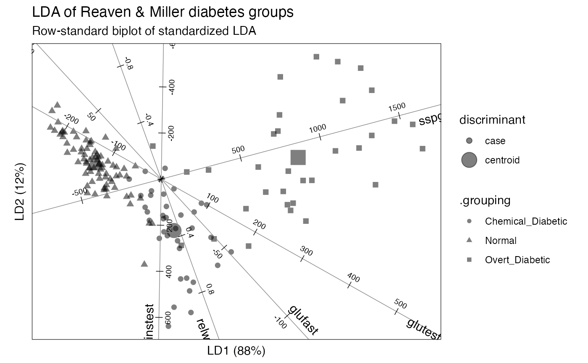
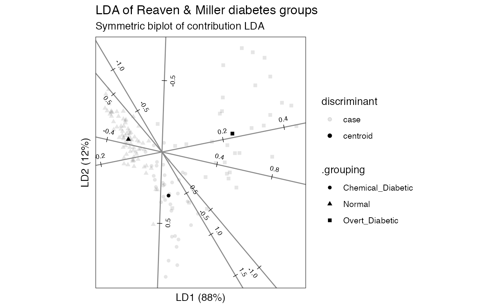

geom_axis() renders lines through the origin and the position
of each case or variable.
geom_axis(
mapping = NULL,
data = NULL,
stat = "identity",
position = "identity",
axis_labels = TRUE,
axis_ticks = TRUE,
axis_text = TRUE,
by = NULL,
num = NULL,
tick_length = 0.025,
text_dodge = 0.03,
label_dodge = 0.03,
...,
parse = FALSE,
check_overlap = FALSE,
na.rm = FALSE,
show.legend = NA,
inherit.aes = TRUE
)Set of aesthetic mappings created by aes(). If specified and
inherit.aes = TRUE (the default), it is combined with the default mapping
at the top level of the plot. You must supply mapping if there is no plot
mapping.
The data to be displayed in this layer. There are three options:
If NULL, the default, the data is inherited from the plot
data as specified in the call to ggplot().
A data.frame, or other object, will override the plot
data. All objects will be fortified to produce a data frame. See
fortify() for which variables will be created.
A function will be called with a single argument,
the plot data. The return value must be a data.frame, and
will be used as the layer data. A function can be created
from a formula (e.g. ~ head(.x, 10)).
The statistical transformation to use on the data for this layer.
When using a geom_*() function to construct a layer, the stat
argument can be used the override the default coupling between geoms and
stats. The stat argument accepts the following:
A Stat ggproto subclass, for example StatCount.
A string naming the stat. To give the stat as a string, strip the
function name of the stat_ prefix. For example, to use stat_count(),
give the stat as "count".
For more information and other ways to specify the stat, see the layer stat documentation.
A position adjustment to use on the data for this layer. This
can be used in various ways, including to prevent overplotting and
improving the display. The position argument accepts the following:
The result of calling a position function, such as position_jitter().
This method allows for passing extra arguments to the position.
A string naming the position adjustment. To give the position as a
string, strip the function name of the position_ prefix. For example,
to use position_jitter(), give the position as "jitter".
For more information and other ways to specify the position, see the layer position documentation.
Logical; whether to include labels, tick marks, and text value marks along the axes.
Intervals between elements or number of elements; specify only one.
Numeric; the length of the tick marks, as a proportion of the minimum of the plot width and height.
Numeric; the orthogonal distance of the text from the axis, as a proportion of the minimum of the plot width and height.
Numeric; the orthogonal distance of the text from the axis or isoline, as a proportion of the minimum of the plot width and height.
Additional arguments passed to ggplot2::layer().
If TRUE, the labels will be parsed into expressions and
displayed as described in ?plotmath.
If TRUE, text that overlaps previous text in the
same layer will not be plotted. check_overlap happens at draw time and in
the order of the data. Therefore data should be arranged by the label
column before calling geom_text(). Note that this argument is not
supported by geom_label().
Passed to ggplot2::layer().
logical. Should this layer be included in the legends?
NA, the default, includes if any aesthetics are mapped.
FALSE never includes, and TRUE always includes.
It can also be a named logical vector to finely select the aesthetics to
display.
If FALSE, overrides the default aesthetics,
rather than combining with them. This is most useful for helper functions
that define both data and aesthetics and shouldn't inherit behaviour from
the default plot specification, e.g. borders().
A ggproto layer.
ggbiplot() uses ggplot2::fortify() internally to produce a single data
frame with a .matrix column distinguishing the subjects ("rows") and
variables ("cols"). The stat layers stat_rows() and stat_cols() simply
filter the data frame to one of these two.
The geom layers geom_rows_*() and geom_cols_*() call the corresponding
stat in order to render plot elements for the corresponding factor matrix.
geom_dims_*() selects a default matrix based on common practice, e.g.
points for rows and arrows for columns.
geom_axis() understands the following aesthetics (required aesthetics are
in bold):
x
y
colour
alpha
linewidth
linetype
label
center, scale
label_colour, label_alpha, label_size, label_angle,
label_hjust, label_vjust, label_family, label_fontface
tick_colour, tick_alpha, tick_linewidth, tick_linetype
text_colour, text_alpha, text_size, text_angle,
text_hjust, text_vjust, text_family, text_fontface
group
The prefixed aesthetics label_*, tick_*, and text_* are used by the
text elements and will inherit any values passed to their un-prefixed
counterparts, if recognized.
Other geom layers:
geom_isoline(),
geom_lineranges(),
geom_origin(),
geom_text_radiate(),
geom_unit_circle(),
geom_vector()
# Reaven & Miller overt & chemical diabetes test data and group classification
head(heplots::Diabetes)
#> relwt glufast glutest instest sspg group
#> 1 0.81 80 356 124 55 Normal
#> 2 0.95 97 289 117 76 Normal
#> 3 0.94 105 319 143 105 Normal
#> 4 1.04 90 356 199 108 Normal
#> 5 1.00 90 323 240 143 Normal
#> 6 0.76 86 381 157 165 Normal
# default (standardized) linear discriminant analysis of groups on tests
diabetes_lda <- MASS::lda(group ~ ., heplots::Diabetes)
# bestow 'tbl_ord' class & augment observation, centroid, and variable fields
as_tbl_ord(diabetes_lda) %>%
augment_ord() %>%
mutate_rows(discriminant = ifelse(
.element == "active",
"centroid", "case"
)) %>%
print() -> diabetes_lda
#> # A tbl_ord of class 'lda': (148 x 2) x (5 x 2)'
#> # 2 coordinates: LD1 and LD2
#> #
#> # Rows (principal): [ 148 x 2 | 6 ]
#> LD1 LD2 | name prior counts grouping
#> | <chr> <dbl> <int> <chr>
#> 1 -1.75 0.400 | 1 Normal 0.524 76 Normal
#> 2 0.340 -1.38 | 2 Chemical_D… 0.248 36 Chemica…
#> 3 3.66 0.580 | 3 Overt_Diab… 0.228 33 Overt_D…
#> 4 -1.72 0.663 | 4 1 NA NA Normal
#> 5 -2.85 1.30 | 5 2 NA NA Normal
#> # ℹ 143 more rows
#> # ℹ 2 more variables:
#> # .element <chr>,
#> # discriminant <chr>
#> #
#> # Columns (standard): [ 5 x 2 | 2 ]
#> LD1 LD2 | name .element
#> | <chr> <chr>
#> 1 1.36 -3.78 | 1 relwt active
#> 2 -0.0336 0.0366 | 2 glufast active
#> 3 0.0126 -0.00709 | 3 glutest active
#> 4 -0.000102 -0.00617 | 4 instest active
#> 5 0.00424 0.00113 | 5 sspg active
# row-standard biplot
diabetes_lda %>%
confer_inertia(1) %>%
ggbiplot() +
theme_bw() + theme_biplot() +
geom_rows_point(aes(shape = grouping, size = discriminant), alpha = .5) +
geom_cols_axis(aes(label = name), color = "#888888", num = 8L,
text_size = 2.5, label_dodge = .02) +
ggtitle(
"LDA of Reaven & Miller diabetes groups",
"Row-standard biplot of standardized LDA"
)
#> Warning: Using size for a discrete variable is not advised.
#> The ggproto `GeomAxis` will soon be migrated from {ordr}.
#> No action is required at this time, but install {gggda} for future use.
#> This message is displayed once per session.

# contribution LDA of groups on tests
diabetes_lda <-
lda_ord(group ~ ., heplots::Diabetes, axes.scale = "contribution")
# bestow 'tbl_ord' class & augment observation, centroid, and variable fields
as_tbl_ord(diabetes_lda) %>%
augment_ord() %>%
mutate_rows(discriminant = ifelse(
.element == "active",
"centroid", "case"
)) %>%
print() -> diabetes_lda
#> # A tbl_ord of class 'lda_ord': (148 x 2) x (5 x 2)'
#> # 2 coordinates: LD1 and LD2
#> #
#> # Rows (principal): [ 148 x 2 | 6 ]
#> LD1 LD2 | name prior counts grouping
#> | <chr> <dbl> <int> <chr>
#> 1 -1.75 0.400 | 1 Normal 0.524 76 Normal
#> 2 0.340 -1.38 | 2 Chemical_D… 0.248 36 Chemica…
#> 3 3.66 0.580 | 3 Overt_Diab… 0.228 33 Overt_D…
#> 4 -1.72 0.663 | 4 1 NA NA Normal
#> 5 -2.85 1.30 | 5 2 NA NA Normal
#> # ℹ 143 more rows
#> # ℹ 2 more variables:
#> # .element <chr>,
#> # discriminant <chr>
#> #
#> # Columns (standard): [ 5 x 2 | 2 ]
#> LD1 LD2 | name .element
#> | <chr> <chr>
#> 1 0.138 -0.384 | 1 relwt active
#> 2 -0.274 0.539 | 2 glufast active
#> 3 0.861 0.288 | 3 glutest active
#> 4 -0.0134 -0.666 | 4 instest active
#> 5 0.388 -0.145 | 5 sspg active
# symmetric biplot
diabetes_lda %>%
confer_inertia(.5) %>%
ggbiplot() +
theme_bw() + theme_biplot() +
geom_rows_point(aes(shape = grouping, alpha = discriminant)) +
geom_cols_axis(color = "#888888", num = 8L,
text_size = 2.5, text_dodge = .025) +
ggtitle(
"LDA of Reaven & Miller diabetes groups",
"Symmetric biplot of contribution LDA"
)
#> Warning: Using alpha for a discrete variable is not advised.
